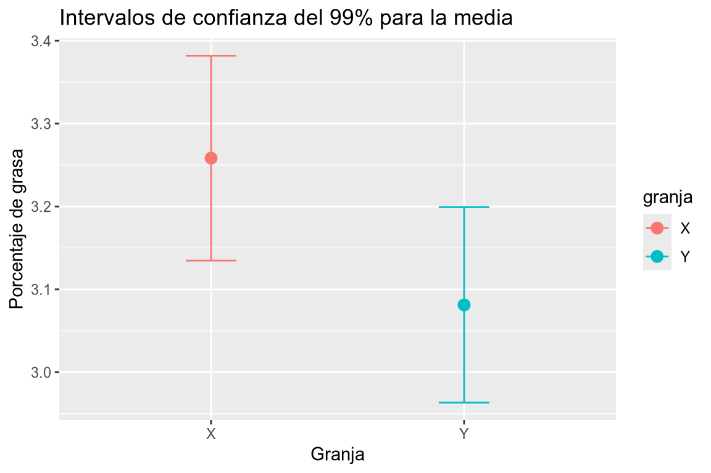
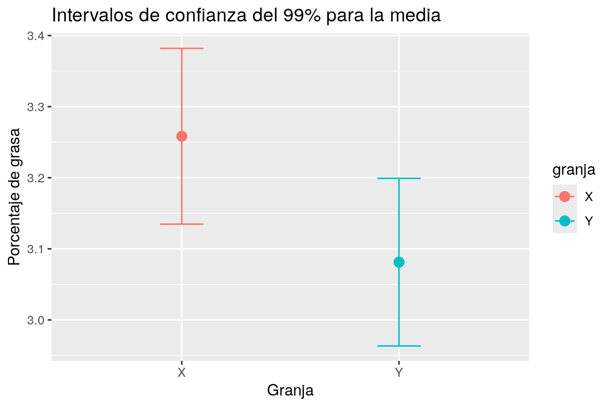

7 Intervalos de confianza
Esta práctica contiene ejercicios que muestran cómo realizar estimaciones de parámetros poblacionales a partir de datos muestrales, utilizando intervalos de confianza. En particular, se muestra cómo calcular los intervalos de confianza para los siguientes parámetros poblacionales:
- La media de una población.
- La proporción de una población.
- La diferencia entre las medias de dos poblaciones pareadas.
- La diferencia entre las medias de dos poblaciones independientes.
- La diferencia entre las proporciones de dos poblaciones.
También se muestra cómo calcular el tamaño muestral necesario para obtener una estimación de un parámetro poblacional con un margen de error y un nivel de confianza determinados.
7.1 Ejercicios Resueltos
Para la realización de esta práctica se requieren los siguientes paquetes:
library(tidyverse)
# Incluye los siguientes paquetes:
# - readr: para la lectura de datos.
# - dplyr: para el preprocesamiento y manipulación de datos.
# - ggplot2: para la representación gráfica.
library(broom) # para convertir las listas con los resúmenes de los modelos de regresión a formato organizado.
library(tidymodels) # para realizar contrastes de hipótesis en formato tidy.
library(samplingbook) # para el cálculo de tamaños muestrales.
library(knitr) # para el formateo de tablas.
Versiones de R y de los paquetes utilizados
Contexto para Copilot
Si se va a usar Copilot para resolver los ejercicios se recomienda añadir el siguiente contexto al comienzo del script o al fichero r.instructions.md.
---
name: "Reglas de programación para R"
applyTo: "**/*.[rR], **/*.qmd"
---
## Reglas de programación para R
- Usar tidyverse para todas las tareas de preprocesamiento (dplyr/tidyr/readr/stringr/lubridate/forcats/purrr).
- Preferir tuberías con |> (o %>% si se usa en el archivo).
- Evitar la manipulación de datos en base R (merge, aggregate, subset) a menos que se solicite explícitamente.
- Mantener el código legible y usar verbos explícitos: select, mutate, summarise, group_by, pivot_longer/wider.
- Cuando no haya ambigüedad no antepongas el nombre del paquete a la función.
- En los nombres de variables y valores respetar el uso de mayúsculas y minúsculas (camelCase o snake_case) y ser consistente en todo el código.
- No generar nuevos data frames, ni modificar los asistentes, salvo cuando se indique explícitamente.
- Utiliza el prefijo `df_` para los nombres de los data frames.
- Organizar las salidas con la función tidy del paquete broom y mostrar solo las columnas relevantes (estimate, std.error, statistic, p.value).
- Mostrar los data frames o las tablas con la función kable del paquete knitr.
- Para gráficos usar ggplot2 y mantener un estilo limpio y profesional.Ejercicio 7.1 Se sabe que para que un fármaco sea efectivo, la concentración de su principio activo debe ser de al menos 16 mg/mm\(^3\).label Una farmacia va a comprar un lote de este medicamento, pero antes quiere asegurarse de que los medicamentos del lote son efectivos y para ello analiza la concentración de principio activo en una muestra aleatoria de 10 envases tomados del lote, obteniendo los siguientes resultados en mg/mm\(^{3}\):
| 17.6 − 19.2 − 21.3 − 15.1 − 17.6 − 18.9 − 16.2 − 18.3 − 19.0 − 16.4 |
Crear un conjunto de datos con los datos de la muestra.
Solucióndf <- data.frame(concentracion = c(17.6, 19.2, 21.3, 15.1, 17.6, 18.9, 16.2, 18.3, 19.0, 16.4 ))library(tidyverse) df <- tibble(concentracion = c(17.6, 19.2, 21.3, 15.1, 17.6, 18.9, 16.2, 18.3, 19.0, 16.4 ))El contenido de principio activo de una muestra de medicamentos de un lote es el siguiente: 17.6, 19.2, 21.3, 15.1, 17.6, 18.9, 16.2, 18.3, 19.0, 16.4. Crear un data frame de nombre df con una columna de nombre concentración que contenga los datos de esta muestra.Calcular la concentración media de principio activo de la muestra. ¿Puede afirmarse que los medicamentos del lote son efectivos?
Soluciónmean(df$concentracion)[1] 17.96Calcular la media de la columna concentración del data frame df.A pesar de la concentración media está por encima de 16 mg/mm\(^3\), se trata de una estimación puntual, y por tanto, no podemos garantizar que la media poblacional esté por encima de 16 mg/mm\(^3\). ¿Puede afirmarse con este nivel de confianza que los medicamentos del lote son efectivos?
Calcular el intervalo de confianza para la media de la concentración del lote con nivel de confianza del 95% (nivel de significación \(\alpha =0.05\)). ¿Puede afirmarse ahora que los medicamentos del lote son efectivos?
SoluciónPara calcular el intervalo de confianza para la media de una población podemos utilizar la función
t.testdel paquetestats.t1 <- t.test(df$concentracion) t1$conf.int[1] 16.68158 19.23842 attr(,"conf.level") [1] 0.95Si queremos mostrar la salida del test en formato de tabla podemos utilizar la función
tidydel paquetebroom.library(tidyverse) library(broom) library(knitr) tidy(t1) |> select(estimate, conf.low, conf.high) |> kable()estimate conf.low conf.high 17.96 16.68158 19.23842 Para calcular el intervalo de confianza para la media de una población podemos usar la función
t_testde la colección de paquetestidymodels, que ofrece ya la salida en formatotidy.library(tidymodels) df |> t_test(response = concentracion) |> select(estimate, lower_ci, upper_ci) |> kable()estimate lower_ci upper_ci 17.96 16.68158 19.23842 Calcular el intervalo de confianza para la media de la columna concentración del data frame df con un nivel de confianza del 95%. Si para que el medicamento sea efectivo la concentración de principio activo debe ser de al menos 16 mg/mm$^3$, según el intervalo de confianza para la media, ¿puede afirmarse con un 95% de confianza que los medicamentos del lote son efectivos?Como el intervalo entero está por encima de 16 mg/mm\(^3\), podemos afirmar con una confianza del 95% que la concentración media de principio activo del lote está por encima de 16 mg/mm\(^3\) y por tanto podemos concluir que los medicamentos del lote son efectivos.
¿Puede afirmarse que los medicamentos del lote son efectivos con un 99% de confianza?
Soluciónt2 <- t.test(df$concentracion, conf.level = 0.99) t2$conf.int[1] 16.1234 19.7966 attr(,"conf.level") [1] 0.99df |> t_test(response = concentracion, conf.level = 0.99) |> select(estimate, lower_ci, upper_ci) |> kable()estimate lower_ci upper_ci 17.96 16.68158 19.23842 Calcular el intervalo de confianza para la media de la columna concentración del data frame df con un nivel de confianza del 99%. Según el intervalo de confianza, ¿puede afirmarse que los medicamentos del lote son efectivos con un 99% de confianza?Como el intervalo entero sigue estando por encima de 16 mg/mm\(^3\), podemos afirmar con una confianza del 99% que los medicamentos del lote son efectivos.
Si definimos la precisión del intervalo como la inversa de su amplitud, ¿cómo afecta a la precisión del intervalo de confianza el tomar niveles de significación cada vez más altos? ¿Cuál puede ser la explicación?
Solucióncat(paste0("Amplitud intervalo 95%: ", t1$conf.int[2] - t1$conf.int[1]))Amplitud intervalo 95%: 2.55684921520655cat(paste0("Amplitud intervalo 99%: ", t2$conf.int[2] - t2$conf.int[1]))Amplitud intervalo 99%: 3.67319282263829Como se ve, al aumentar el nivel de confianza del intervalo, la precisión disminuye. Ello es debido a que para tener más confianza de capturar el verdadero valor de la media en el intervalo, debemos hacer mayor el intervalo.
¿Qué tamaño muestral sería necesario para obtener una estimación del contenido medio de principio activo con un margen de error de \(\pm 0.5\) mg/mm\(^3\) y una confianza del 95%?
SoluciónEl tamaño muestral necesario para construir un intervalo de confianza para la media depende del nivel de confianza deseado (0.95 en este caso), del error o semiamplitud del intervalo deseado (0.5 en este caso) y de la desviación típica poblacional, que no se conoce, pero se puede estimar mediante la cuasidesviación típica muestral.
library(samplingbook) sample.size.mean(e = 0.5, S = sd(df$concentracion), level = 0.95)sample.size.mean object: Sample size for mean estimate Without finite population correction: N=Inf, precision e=0.5 and standard deviation S=1.7871 Sample size needed: 50Calcular, usando el paquete samplingbook el tamaño muestral que sería necesario para obtener una estimación del contenido medio de principio activo con un margen de error de $\pm 0.5$ mg/mm$^3$ y una confianza del 95%.
Ejercicio 7.2 Una central de productos lácteos recibe diariamente la leche de dos granjas \(X\) e \(Y\). Para analizar la calidad de la leche, durante una temporada, se controla el porcentaje de materia grasa de la leche que proviene de ambas granjas, con los siguientes resultados:
| Granja | Materia grasa |
|---|---|
| \(X\) | 3.4 – 3.4 – 3.2 – 3.5 – 3.3 – 3.3 – 3.2 – 3.2 – 3.3 – 3.0 – 3.1 – 3.2 |
| \(Y\) | 2.8 – 2.9 – 3.0 – 3.2 – 3.2 – 3.1 – 2.9 – 2.9 – 3.1 – 3.2 – 2.9 – 3.1 – 3.3 – 3.2 – 3.2 – 3.3 |
Crear un conjunto de datos con los datos de la muestra.
Soluciónlibrary(tidyverse) df <- tibble( grasa = c(3.4, 3.2, 3.3, 3.2, 3.3, 3.1, 3.4, 3.5, 3.3, 3.2, 3.0, 3.2, 2.8, 3.0, 3.2, 2.9, 3.1, 2.9, 3.3, 3.2, 2.9, 3.2, 3.1, 2.9, 3.2, 3.1, 3.2, 3.3), granja = factor(c(rep("X", 12), rep("Y", 16))) )Crear un data frame de nombre df con dos columnas: una columna de nombre grasa que contenga los datos del porcentaje de materia grasa de la leche de las granjas X e Y, y otra columna de nombre granja que indique a qué granja corresponde cada dato. Los datos del porcentaje de materia grasa de la leche de la granja X son: 3.4, 3.4, 3.2, 3.5, 3.3, 3.3, 3.2, 3.2, 3.3, 3.0, 3.1 y 3.2. Los datos del porcentaje de materia grasa de la leche de la granja Y son: 2.8, 2.9, 3.0, 3.2, 3.2, 3.1, 2.9, 2.9, 3.1, 3.2, 2.9, 3.1, 3.3, 3.2, 3.2 y 3.3.Calcular el contenido medio de materia grasa de la muestra de leche cada granja y los respectivos intervalos de confianza con un 95% de confianza. Dibujar los intervalos de confianza obtenidos.
SoluciónPara calcular el intervalo de confianza para la media de una población podemos utilizar la función
t.testdel paquetestats.library(knitr) df |> group_by(granja) |> summarise("Media" = mean(grasa, na.rm = T), "IC 95% Inf" = t.test(grasa)$conf.int[1], "IC 95% Sup" = t.test(grasa)$conf.int[2]) |> kable()granja Media IC 95% Inf IC 95% Sup X 3.258333 3.170719 3.345948 Y 3.081250 2.995950 3.166550 Otra opción es anidando los data frames de cada granja y aplicar el test t para cada grupo.
tabla_ic <- df |> nest(data = -granja) |> mutate(test = map(data, ~ tidy(t.test(.x$grasa)))) |> unnest(test) |> select(granja, estimate, conf.low, conf.high) tabla_ic |> kable()granja estimate conf.low conf.high X 3.258333 3.170719 3.345948 Y 3.081250 2.995950 3.166550 Ahora dibujamos los intervalos de confianza.
tabla_ic |> ggplot(aes(x = granja, y = estimate, color = granja)) + geom_point(size = 3) + geom_errorbar(aes(ymin = conf.low, ymax = conf.high), width = 0.2) + labs(title = "Intervalos de confianza del 95% para la media", x = "Granja", y = "Porcentaje de grasa")
Para calcular el intervalo de confianza para la media de una población podemos usar la función
t_testde la colección de paquetestidymodels, que ofrece ya la salida en formatotidy.library(tidymodels) df |> nest(data = -granja) |> mutate(test = map(data, ~ t_test(x = .x, response = grasa))) |> unnest(test) |> select(granja, estimate, lower_ci, upper_ci) |> kable()granja estimate lower_ci upper_ci X 3.258333 3.170719 3.345948 Y 3.081250 2.995950 3.166550 Calcular el intervalo de confianza para la media de la columna grasa del data frame df para cada granja con un nivel de confianza del 95%. Dibujar los intervalos de confianza obtenidos para cada granja.A la vista de los intervalos de confianza obtenidos ¿Existen diferencias estadísticamente significativas entre los contenidos medios de grasa de la leche de las dos granjas? En tal caso, ¿qué granja produce leche con más grasa?
SoluciónComo los intervalos no se solapan, es decir, no tienen valores en común, podemos concluir que los contenidos medios de grasa de las leches de las dos granjas son significativamente diferentes con un 95% de confianza. Además se aprecia que el intervalo de la granja \(X\) tiene valores mayores que el de la granja \(Y\), por lo que la leche de la granja \(X\) tiene más contenido de grasa que la de la granja \(Y\).
Repetir los cálculos anteriores tomando una confianza del 99%. ¿Existen diferencias estadísticamente significativas entre el contenido medio de grasa de las leches de las dos granjas con este nivel de confianza?
Solucióntabla_ic_99 <- df |> nest(data = -granja) |> mutate(test = map(data, ~ tidy(t.test(.x$grasa, conf.level = 0.99)))) |> unnest(test) |> select(granja, estimate, conf.low, conf.high) tabla_ic_99 |> kable()granja estimate conf.low conf.high X 3.258333 3.134701 3.381966 Y 3.081250 2.963324 3.199176 Ahora dibujamos los intervalos de confianza.
tabla_ic_99 |> ggplot(aes(x = granja, y = estimate, color = granja)) + geom_point(size = 3) + geom_errorbar(aes(ymin = conf.low, ymax = conf.high), width = 0.2) + labs(title = "Intervalos de confianza del 99% para la media", x = "Granja", y = "Porcentaje de grasa")
library(tidymodels) df |> nest(data = -granja) |> mutate(test = map(data, ~ t_test(x = .x, response = grasa, conf_level = 0.99))) |> unnest(test) |> select(granja, estimate, lower_ci, upper_ci) |> kable()granja estimate lower_ci upper_ci X 3.258333 3.134701 3.381966 Y 3.081250 2.963324 3.199176 Calcular el intervalo de confianza para la media de la columna grasa del data frame df para cada granja con un nivel de confianza del 99%. Dibujar los intervalos de confianza obtenidos para cada granja.Como se ve, ahora los dos intervalos se solapan y por tanto las medias del contenido de grasa de las leches de las dos granjas podrían ser iguales. Por tanto, no existen diferencias estadísticamente significativas entre el contenido medio de grasa de las leches de las dos granjas con un 99% de confianza.
Ejercicio 7.3 El conjunto de datos biblioteca.csv contiene los resultados de una encuesta realizada en una universidad, sobre si el alumnado utiliza habitualmente (al menos una vez a la semana) la biblioteca.
Crear conjunto de datos con los datos de la muestra a partir del fichero
biblioteca.csv.Soluciónlibrary(tidyverse) df <- read_csv("https://aprendeconalf.es/estadistica-practicas-r/datos/biblioteca.csv")El fichero https://aprendeconalf.es/estadistica-practicas-r/datos/biblioteca.csv contiene datos de una encuesta sobre si los alumnos de una universidad utilizan o no la biblioteca habitualmente. Crear un conjunto de datos de nombre df con los datos del fichero.Calcular el intervalo de confianza con \(\alpha=0.01\) para la proporción del alumnado que utiliza habitualmente la biblioteca. ¿Cómo es la precisión del intervalo?
SoluciónPara calcular el intervalo de confianza para la proporción de una población podemos utilizar la función
prop.testdel paquetestats.Si queremos mostrar la salida del test en formato de tabla podemos utilizar la función
tidydel paquetebroom.library(broom) library(knitr) frec <- table(df$respuesta) tidy(prop.test(frec["si"], nrow(df), conf.level = 0.99)) |> select(estimate, conf.low, conf.high) |> kable()estimate conf.low conf.high 0.4705882 0.261705 0.6896622 Para calcular el intervalo de confianza para la proporción de una población podemos usar la función
prop_testde la colección de paquetestidymodels, que ofrece ya la salida en formatotidy.library(tidymodels) library(knitr) df |> prop_test(response = respuesta, conf_level = 0.99) |> mutate(estimate = nrow(df[df$respuesta == "si", ]) / nrow(df)) |> select(estimate, lower_ci, upper_ci) |> kable()estimate lower_ci upper_ci 0.4705882 0.3103378 0.738295 Calcula el intervalo del 99% de confianza para la proporción de alumnos que utilizan la biblioteca.Se trata de un intervalo poco preciso, ya que su amplitud es bastante grande.
Calcular los intervalo de confianza para las proporciones de chicas y chicos que utilizan regularmente la biblioteca. ¿Existe una diferencia estadísticamente significativa entre la proporción de chicas y chicos que utilizan regularmente la biblioteca? En tal caso, ¿quiénes utilizan más la biblioteca?
Solucióndf |> group_by(sexo) |> count(respuesta) |> mutate(test = map(n, \(x) tidy(prop.test(x, sum(n))))) |> unnest(test) |> filter(respuesta == "si") |> select(sexo, respuesta, n, estimate, conf.low, conf.high) |> kable()sexo respuesta n estimate conf.low conf.high H si 3 0.1875000 0.0497313 0.4630766 M si 13 0.7222222 0.4640580 0.8928742 df |> nest(data = -sexo) |> mutate(test = map(data, ~ prop_test(x = .x, response = respuesta, success = "si"))) |> mutate(estimate = map(data, ~ nrow(.x[.x$respuesta == "si", ]) / nrow(.x))) |> unnest(c(test, estimate)) |> select(sexo, estimate, lower_ci, upper_ci) |> kable()sexo estimate lower_ci upper_ci H 0.1875000 0.0497313 0.4630766 M 0.7222222 0.4640580 0.8928742 Calcular los intervalos de confianza del 95% para la proporción de alumnos que utilizan regularmente la biblioteca según el sexo.Como los intervalos de confianza para las proporciones de chicos y chicas que utilizan regularmente la biblioteca no se solapan, es decir, no tienen valores en común, podemos concluir que existe una diferencia estadísticamente significativa entre ambas proporciones con un 95% de confianza. Como además el intervalo de confianza para la proporción de chicas está claramente por encima del de chicos, se concluye que hay más chicas utilizan regularmente la biblioteca.
Ejercicio 7.4 En una encuesta sobre hábitos saludables se ha preguntado sobre el consumo de alcohol a 200 jóvenes de 18 años y se ha observado que 88 consumen alcohol los fines de semana.
Calcular el intervalo de confianza para el porcentaje de jóvenes de 18 años que consumen alcohol los fines de semana. ¿Es un intervalo de confianza preciso?
Soluciónlibrary(broom) library(knitr) tidy(prop.test(88, 200)) |> select(estimate, conf.low, conf.high) |> mutate(across(everything(), ~ .x * 100)) |> kable()estimate conf.low conf.high 44 37.05669 51.1776 Calcular el intervalo de confianza del 95% para la proporción de jóvenes de 18 años que consumen alcohol los fines de semana, a partir de una muestra de 200 jóvenes, de los cuales 88 consumen alcohol los fines de semana.El margen de error del intervalo es de aproximadamente un ±7%, por lo que se trata de un intervalo poco preciso.
¿Qué tamaño muestral sería necesario para obtener una estimación del porcentaje de jóvenes que consumen alcohol los fines de semana con un margen de error de ±1% y una confianza del 95%?
SoluciónEl tamaño muestral necesario para construir un intervalo de confianza para la proporción depende del nivel de confianza deseado (0.95 en este caso), del error o semiamplitud del intervalo deseado (0.01 en este caso) y de proporción poblacional, que no se conoce, pero se puede estimar mediante la proporción muestral.
library(samplingbook) sample.size.prop(e = 0.01, P = 88/200, level = 0.95)sample.size.prop object: Sample size for proportion estimate Without finite population correction: N=Inf, precision e=0.01 and expected proportion P=0.44 Sample size needed: 9466Calcular el tamaño muestral necesario para obtener una estimación del porcentaje de jóvenes que consumen alcohol los fines de semana con un margen de error 0.01 y nivel de confianza 0.95.
Ejercicio 7.5 Para ver si una campaña de publicidad sobre un fármaco ha influido en sus ventas, se tomó una muestra de 8 farmacias y se midió el número de unidades de dicho fármaco vendidas durante un mes, antes y después de la campaña, obteniéndose los siguientes resultados:
| Antes | 147 | 163 | 121 | 205 | 132 | 190 | 176 | 147 |
| Después | 150 | 171 | 132 | 208 | 141 | 184 | 182 | 145 |
Crear un conjunto de datos con los datos de la muestra.
Solucióndf <- data.frame( antes = c(147, 163, 121, 205, 132, 190, 176, 147), después = c(150, 171, 132, 208, 141, 184, 182, 145))Crear un data frame de nombre df con dos columnas: una columna de nombre antes que contenga los datos del número de unidades vendidas antes de una campaña de publicidad (147, 163, 121, 205, 132, 190, 176, 147), y otra columna de nombre después que contenga los datos del número de unidades vendidas después de la campaña de publicidad (150, 171, 132, 208, 141, 184, 182, 145).Calcular las ventas medias antes y después de la campaña de publicidad. ¿Ha aumentado la campaña las ventas medias?, ¿crees que los resultados son estadísticamente significativos?
Soluciónlibrary(kableExtra) library(tidyverse) df |> # Calculamos la media de las columnas antes y después del data frame. summarize(across(antes:después, ~ mean(.x, na.rm = TRUE))) |> # Renombramos los nombres de las columnas del data frame resultante. rename(`Ventas medias antes` = antes, `Ventas medias después` = después) |> # Mostramos por pantalla en formato tabla. kbl()Ventas medias antes Ventas medias después 160.125 164.125 Calcular la media de las columnas antes y después del data frame df.A pesar de que las ventas medias después de la campaña de publicidad han aumentado en la muestra, no podemos concluir que las medias poblacionales han aumentado significativamente ya que se trata de estimaciones puntuales que no tienen en cuenta el error en la estimación.
Calcular el intervalo de confianza para la media de la diferencia entre las ventas de después y antes de la campaña de publicidad. ¿Existen pruebas suficientes para afirmar con un 95% de confianza que la campaña de publicidad ha aumentado las ventas?
Soluciónlibrary(broom) # Añadimos al data frame una nueva variable con la diferencia entre las ventas de después y antes df$incremento <- df$después - df$antes # Aplicamos el test de la t de student para una muestra. tidy(t.test(df$incremento)) |> # Obtenemos la estimación de la media de la diferencia entre las ventas de después y antes y el intervalo de confianza del 95%. select(estimate, conf.low, conf.high) |> # Mostramos por pantalla en formato tabla. kable()estimate conf.low conf.high 4 -0.8129585 8.812959 Podemos llegar a este mismo intervalo de confianza sin necesitad de calcular previamente la diferencia entre las ventas de después y antes, pasándole directamente las dos variables a comparar a la función
t.testañadiendo el parámetropaired = TRUE.# Aplicamos el test de la t de student para muestras pareadas. tidy(t.test(df$después, df$antes, paired = TRUE)) |> # Obtenemos la estimación de la media de la diferencia entre las ventas de después y antes y el intervalo de confianza del 95%. select(estimate, conf.low, conf.high) |> kable()estimate conf.low conf.high 4 -0.8129585 8.812959 Calcular el intervalo de confianza para la media de la diferencia entre las ventas de después y antes de la campaña de publicidad con un nivel de confianza del 95%.Como el intervalo contiene tanto valores negativos como positivos, y en particular contiene el 0, no podemos concluir que existen diferencias significativas entre las ventas medias de después y antes, y por tanto no hay pruebas suficientes para afirmar con un 95% de confianza que la campaña de publicidad es efectiva.
Si añadimos a la muestra dos nuevas farmacia con unas ventas antes de 155 y 160 unidades y unas ventas después de 170 y 180 unidades respectivamente, ¿qué efecto tendrán sobre el intervalo de confianza para la media de la diferencia entre las ventas de después y antes de la campaña de publicidad? ¿Podemos afirmar ahora con un 95% de confianza que la campaña de publicidad ha aumentado las ventas? En tal caso, ¿en cuanto se incrementarán las ventas medias?
SoluciónComo las ventas se han incrementado bastante en estas dos nuevas farmacias, la media de la diferencia entre las ventas de después y antes de la campaña de publicidad y el correspondiente intervalo de confianza se desplazará hacia la derecha, es decir, aumentará.
# Añadimos al data frame los datos de la nueva farmacia. df <- rbind(df, c(155, 170, 170-155), c(160, 180, 180 - 160)) # Volvemos a calcular el intervalo de confianza para la media de la diferencia entre las ventas de después y antes. tidy(t.test(df$incremento)) |> select(estimate, conf.low, conf.high) |> kable()estimate conf.low conf.high 6.7 1.178915 12.22108 Añadir al data frame df dos nuevas filas con los datos de dos nuevas farmacias, una con ventas antes de 155 unidades y ventas después de 170 unidades, y otra con ventas antes de 160 unidades y ventas después de 180 unidades. Volver a calcular el intervalo de confianza para la media de la diferencia entre las ventas de después y antes de la campaña de publicidad con un nivel de confianza del 95%.Como ahora el intervalo es completamente positivo, podemos afirmar con un 95% de confianza que la media de la diferencia entre las ventas de después y antes de la campaña de publicidad es positiva, es decir ha habido un incremento estadísticamente significativo de las ventas después de la campaña y el incremento medio estará entre 1.1789 y 12.2211 unidades más al mes.
Ejercicio 7.6 Una central de productos lácteos recibe diariamente la leche de dos granjas \(X\) e \(Y\). Para analizar la calidad de la leche, durante una temporada, se controla el porcentaje de materia grasa de la leche que proviene de ambas granjas, con los siguientes resultados:
| Granja | Materia grasa |
|---|---|
| \(X\) | 3.4 – 3.4 – 3.2 – 3.5 – 3.3 – 3.3 – 3.2 – 3.2 – 3.3 – 3.0 – 3.1 – 3.2 |
| \(Y\) | 2.8 – 2.9 – 3.0 – 3.2 – 3.2 – 3.1 – 2.9 – 2.9 – 3.1 – 3.2 – 2.9 – 3.1 – 3.3 – 3.2 – 3.2 – 3.3 |
Crear un conjunto de datos con los datos de la muestra.
Soluciónlibrary(tidyverse) df <- tibble( grasa = c(3.4, 3.2, 3.3, 3.2, 3.3, 3.1, 3.4, 3.5, 3.3, 3.2, 3.0, 3.2, 2.8, 3.0, 3.2, 2.9, 3.1, 2.9, 3.3, 3.2, 2.9, 3.2, 3.1, 2.9, 3.2, 3.1, 3.2, 3.3), granja = factor(c(rep("X", 12), rep("Y", 16))) )Crear un data frame de nombre df con dos columnas: una columna de nombre grasa que contenga los datos del porcentaje de materia grasa de la leche de las granjas X e Y, y otra columna de nombre granja que indique a qué granja corresponde cada dato. Los datos del porcentaje de materia grasa de la leche de la granja X son: 3.4, 3.4, 3.2, 3.5, 3.3, 3.3, 3.2, 3.2, 3.3, 3.0, 3.1 y 3.2. Los datos del porcentaje de materia grasa de la leche de la granja Y son: 2.8, 2.9, 3.0, 3.2, 3.2, 3.1, 2.9, 2.9, 3.1, 3.2, 2.9, 3.1, 3.3, 3.2, 3.2 y 3.3.Calcular el intervalo de confianza para el cociente de varianzas del porcentaje de materia grasa de la leche procedente de ambas granjas. ¿Existen diferencias estadísticamente significativas entre las varianzas de la grasa de las leches de las dos granjas?
Soluciónlibrary(broom) library(knitr) # Aplicamos el test F de Fisher para la comparación de varianzas. tidy(var.test(grasa ~ granja, data = df)) |> # Obtenemos la estimación del cociente de varianzas de la grasa de la leche de las granjas y el intervalo de confianza del 95%. select(estimate, conf.low, conf.high) |> # Mostramos por pantalla en formato tabla. kable()estimate conf.low conf.high 0.7420547 0.2467078 2.470994 Calcular el intervalo de confianza para el cociente de varianzas del porcentaje de materia grasa de la leche procedente de ambas granjas con un nivel de confianza del 95%. Según el intervalo de confianza, ¿existen diferencias estadísticamente significativas entre las varianzas de la grasa de las leches de las dos granjas?Como el intervalo de confianza contiene el valor 1, no podemos afirmar que haya diferencias estadísticamente significativas entre las varianzas del porcentaje de materia grasa de las leches de las dos granjas, y por tanto podemos asumir que la variabilidad es parecida en ambas granjas.
Calcular el intervalo de confianza para la diferencia en el porcentaje medio de materia grasa de la leche procedente de las dos granjas. ¿Se puede concluir que existen diferencias significativas en el porcentaje medio de grasa de la leche de las dos granjas? En tal caso, ¿qué leche tiene mayor porcentaje de grasa?
Solución# Aplicamos el test de la t de student para muestras independientes con varianzas iguales. tidy(t.test(grasa ~ granja, equal.var = TRUE, data = df)) |> # Obtenemos la estimación de la diferencia de las medias de la grasa de la leche de las granjas y el intervalo de confianza del 95%. select(estimate, conf.low, conf.high) |> # Mostramos por pantalla en formato tabla. kable()estimate conf.low conf.high 0.1770833 0.0609291 0.2932376 AdvertenciaLa función
t.testcalcula el intervalo de confianza para la diferencia de medias de primer nivel (en este caso \(X\)) y el segundo nivel (en este caso \(Y\)) del factorgranja. Si se desea obtener el intervalo para diferencia de medias entre \(Y\) y \(X\) es necesario reordenar los niveles del factor.Calcular el intervalo de confianza para la diferencia en el porcentaje medio de materia grasa de la leche procedente de las dos granjas con un nivel de confianza del 95%. Según el intervalo de confianza, ¿se puede concluir que existen diferencias significativas en el porcentaje medio de grasa de la leche de las dos granjas? En tal caso, ¿qué leche tiene mayor porcentaje de grasa?Como el intervalo de confianza es completamente positivo, y por tanto no contiene el 0, podemos afirmar con un 95% de confianza que existen diferencias estadísticamente entre el porcentaje de grasa de ambas granjas. Como además el intervalo es para la diferencia entre las medias del porcentaje de leche de la granja \(X\) y de la granja \(Y\), podemos concluir que el porcentaje medio de grasa de la leche de la granja \(X\) es significativamente mayor que el de la granja \(Y\).
Ejercicio 7.7 El conjunto de datos biblioteca.csv contiene los resultados de una encuesta realizada en una universidad, sobre si el alumnado utiliza habitualmente (al menos una vez a la semana) la biblioteca.
Crear conjunto de datos con los datos de la muestra a partir del fichero
biblioteca.csv.Soluciónlibrary(tidyverse) df <- read_csv("https://aprendeconalf.es/estadistica-practicas-r/datos/biblioteca.csv")El fichero https://aprendeconalf.es/estadistica-practicas-r/datos/biblioteca.csv contiene datos de una encuesta sobre si los alumnos de una universidad utilizan o no la biblioteca habitualmente. Crear un conjunto de datos de nombre df con los datos del fichero.Calcular el intervalo de confianza para la diferencia entre las proporciones de chicos y chicas que utilizan habitualmente la biblioteca. ¿Existen diferencias significativas entre las proporciones de chicos y chicas que usan habitualmente la biblioteca? En tal caso, ¿quienes utilizan más la biblioteca?
Solución# Calculamos las frecuencias absolutas y los tamaños muestrales de las muestras de ambos sexos. df2 <- df |> group_by(sexo) |> count(respuesta, name = "frec") |> mutate(n = sum(frec)) |> filter(respuesta == "si") # Aplicamos el test de comparación de proporciones. tidy(prop.test(df2$frec, df2$n)) |> # Obtenemos la estimación de la diferencia de las proporciones de chicos y chicas que utilizan habitualmente la biblioteca y el intervalo de confianza del 95%. select(estimate1, estimate2, conf.low, conf.high) |> # Mostramos por pantalla en formato tabla. kable()estimate1 estimate2 conf.low conf.high 0.1875 0.7222222 -0.8755141 -0.1939304 AdvertenciaLa función
prop.testcalcula el intervalo de confianza para la diferencia de proporciones de la primera muestra (en este caso chicos) la segunda (en este caso chicas). Si se desea obtener el intervalo para diferencia de proporciones entre chicas y chicos es necesario introducir primero las frecuencias de las chicas.Calcular el intervalo de confianza para la diferencia entre las proporciones de chicos y chicas que utilizan habitualmente la biblioteca con un nivel de confianza del 95%. Según el intervalo de confianza, ¿existen diferencias significativas entre las proporciones de chicos y chicas que usan habitualmente la biblioteca? En tal caso, ¿quienes utilizan más la biblioteca?Como el intervalo de confianza es completamente negativo, y por tanto no contiene el 0, podemos afirmar con un 95% de confianza que existen diferencias estadísticamente significativas entre la proporción de chicos y chicas que utilizan habitualmente la biblioteca. Como además el intervalo de confianza es para la diferencia entre la proporción de chicos y chicas, se puede concluir que la proporción de chicas que usan habitualmente la biblioteca es significativamente mayor que la de chicos.
Ejercicio 7.8 Un profesor universitario ha tenido dos grupos de clase a lo largo del año: uno con horario de mañana y otro de tarde. En el de mañana, sobre un total de 80 alumnos, han aprobado 55; y en el de tarde, sobre un total de 90 alumnos, han aprobado 32.
¿Existen diferencias significativas en el porcentaje de aprobados de los dos grupos? En tal caso, ¿en qué turno hay un porcentaje mayor de aprobados y cuánto mayor es?
Solución# Aplicamos el test de comparación de proporciones. tidy(prop.test(c(55, 32), c(80, 90))) |> # Obtenemos la estimación de la diferencia de las proporciones de chicos y chicas que utilizan habitualmente la biblioteca y el intervalo de confianza del 95%. select(estimate1, estimate2, conf.low, conf.high) |> # Multiplicamos por 100 todas las columnas para obtener porcentajes. mutate(across(everything(), ~ .x * 100)) |> # Mostramos por pantalla en formato tabla. kable()estimate1 estimate2 conf.low conf.high 68.75 35.55556 17.83764 48.55125 Un profesor universitario ha tenido dos grupos de clase a lo largo del año: uno con horario de mañana y otro de tarde. En el de mañana, sobre un total de 80 alumnos, han aprobado 55; y en el de tarde, sobre un total de 90 alumnos, han aprobado 32. Calcular el intervalo de confianza para la diferencia entre las proporciones de aprobados en los turnos de mañana y tarde con un nivel de confianza del 95%. Según el intervalo de confianza, ¿existen diferencias significativas en el porcentaje de aprobados de los dos grupos? En tal caso, ¿en qué turno hay un porcentaje mayor de aprobados y cuánto mayor es?Como el intervalo de confianza es completamente positivo, y por tanto no contiene el 0, podemos afirmar con un 95% de confianza que existen diferencias estadísticamente significativas entre el porcentaje de aprobados en los turnos de mañana y tarde. Como además el intervalo de confianza es para la diferencia entre el porcentaje de aprobados en la mañana y el porcentaje de aprobados en la tarde, se puede concluir que la proporción de aprobados en la mañana es significativamente mayor que en la tarde, en particular, entre un 17.83% y un 48.55% mayor.
¿Puede concluirse que las diferencias son debidas al turno horario?
SoluciónNo puede concluirse que la diferencia entre el porcentaje de aprobados de la mañana y la tarde sea debido al factor horario, ya que las diferencias podrían deberse a otros factores como el tipo de alumnos, el profesor, la metodología, el examen, etc. Para poder concluir que la causa de la diferencia en el porcentaje de aprobados es el turno horario, el resto de factores deberían ser iguales en la mañana y la tarde.
7.2 Ejercicios propuestos
Ejercicio 7.9 El conjunto de datos neonatos contiene información sobre una muestra de 320 recién nacidos en un hospital durante un año que cumplieron el tiempo normal de gestación.
Calcular el intervalo de confianza del 99% para el peso medio de los recién nacidos. ¿Entre qué valores estará el peso medio?
Calcular el intervalo de confianza para la puntuación media del Apgar al minuto de nacer y compararlo con el de la puntuación Apgar a los 5 minutos. ¿Existe una diferencia estadísticamente significativa entre las medias de las dos puntuaciones?
Calcular el intervalo de confianza para el porcentaje de niños con peso menor o igual que 2.5 Kg en el grupo de las madres que han fumado durante el embarazo y en el de las que no. ¿Podemos afirmar con un 95% de confianza que el que la madre fume influye significativamente en el peso de los recién nacidos?
Ejercicio 7.10 En un laboratorio farmaceútico, hay dos máquinas que producen un mismo tipo de pastillas. Se ha tomado una muestra de pastillas de cada máquina y se ha observado que en la primera máquina hubo 12 pastillas defectuosas de un total de 200, mientras que en la segunda máquina hubo un total de 10 pastillas defectuosas de un total de 300. ¿Se puede afirmar con un 90% de confianza que la segunda máquina produce menos pastillas defectuosas que la primera?